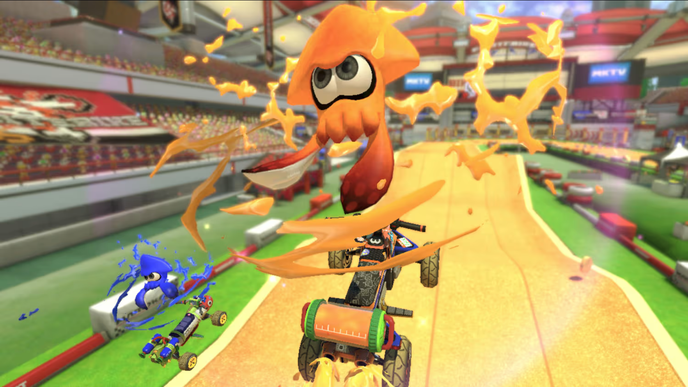
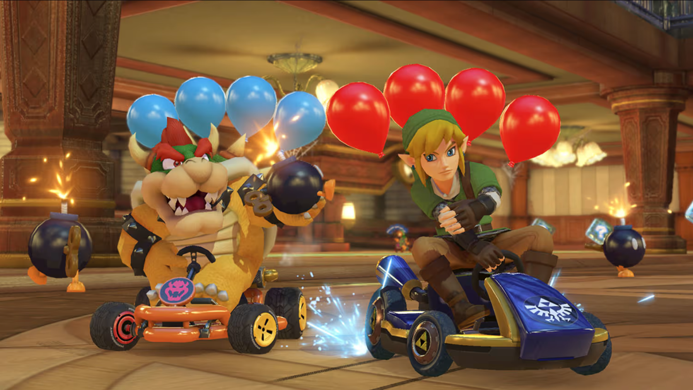
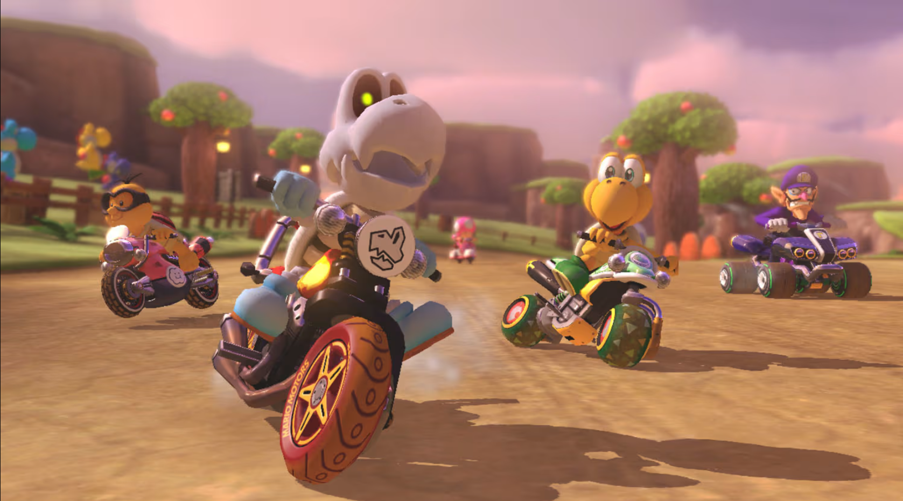
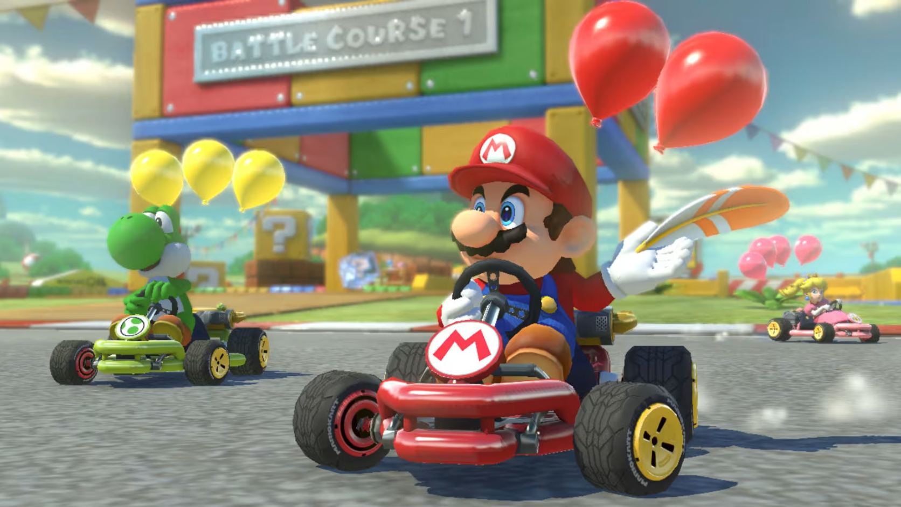
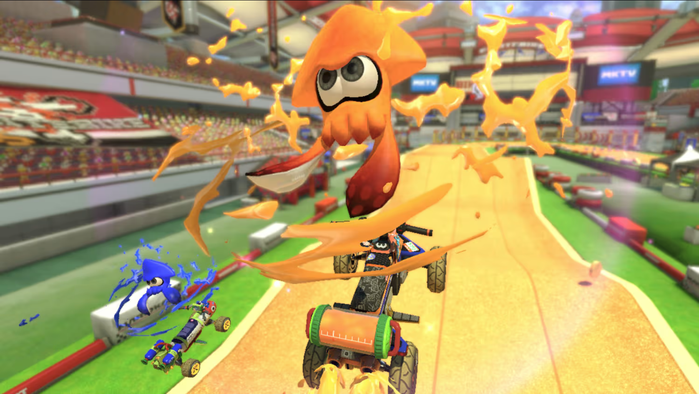
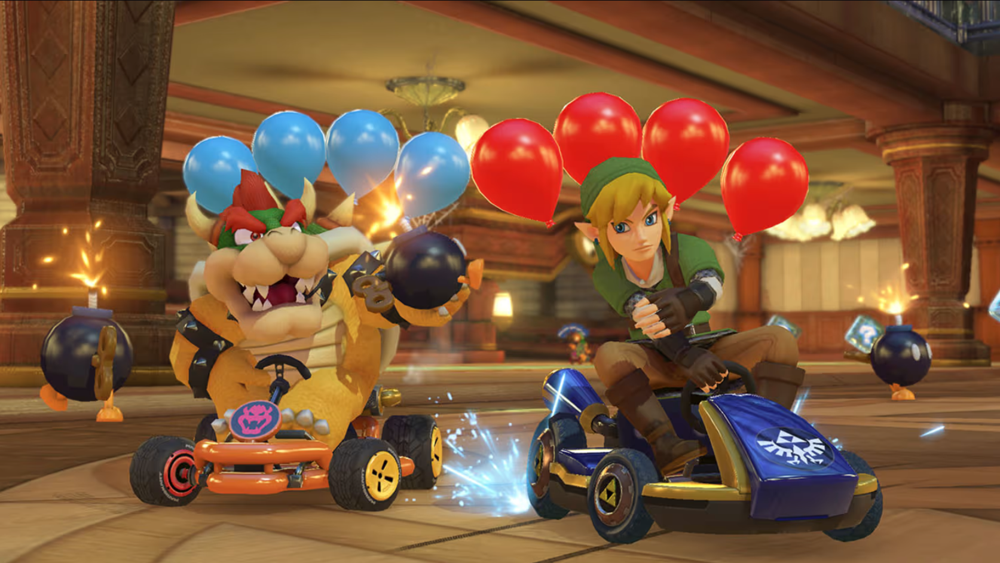
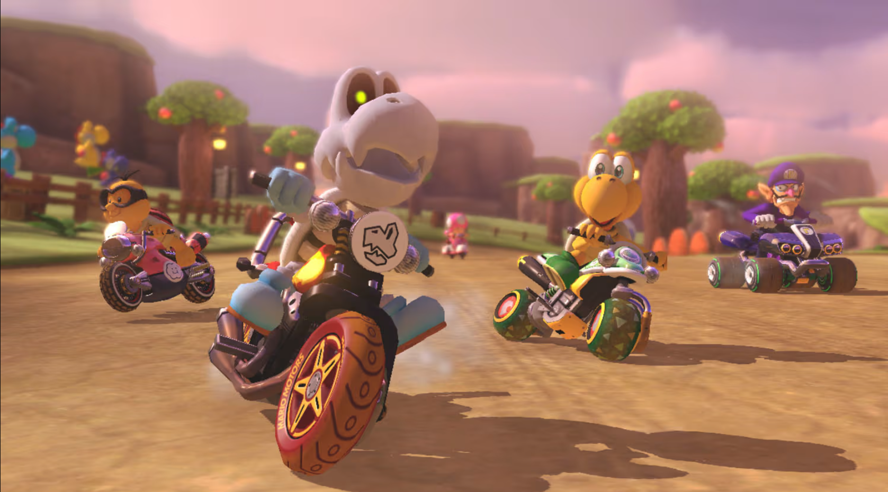
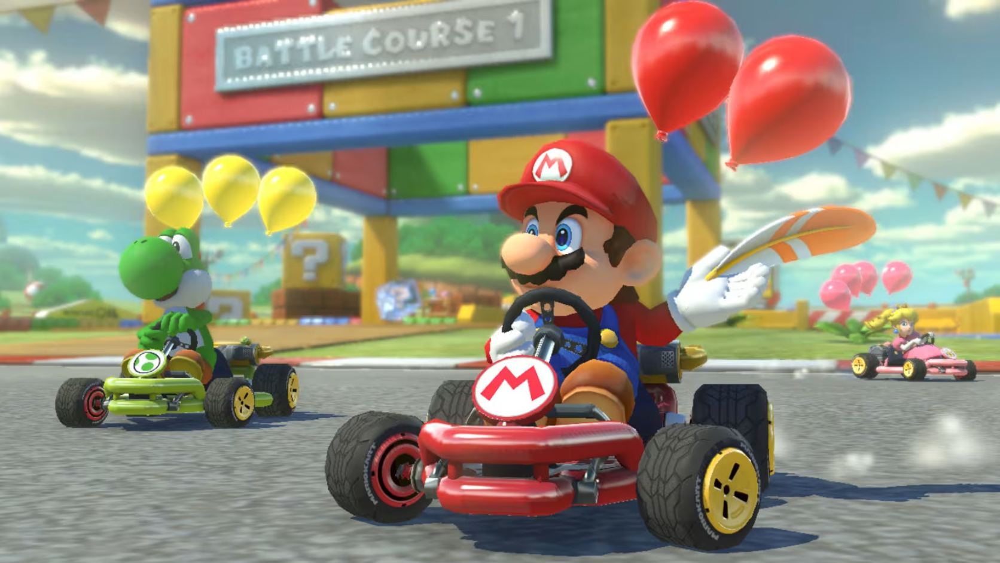

Mario kart 8 Deluxe
¡Bienvenidos a la carrera definitiva!
Prepárense para la velocidad, la diversión y el caos controlado, porque les presentamos el juego de carreras que lo tiene TODO: Mario Kart 8 Deluxe para Nintendo Switch. Mario Kart 8 Deluxe: ¡La fiesta de carreras definitiva en cualquier lugar!
¿Están listos para tomar el volante junto a Mario, Peach, Donkey Kong y una lista de personajes invitados que incluye a los Inklings de Splatoon? Mario Kart 8 Deluxe no es solo un juego de carreras, es la versión más grande y completa de la aclamada serie, repleta de adrenalina y rivalidad amistosa. En el mundo de los videojuegos de carreras, pocos títulos son tan icónicos y queridos como Mario Kart. A lo largo de los años, la serie ha evolucionado, ofreciendo diversión a jugadores de todas las edades.- Una variedad de personajes: Puedes elegir entre muchos personajes del universo de Mario, cada uno con sus propias características.
- Pistas imaginativas: Las pistas están llenas de obstáculos, atajos y secciones únicas que desafían a los jugadores.
- Objetos para usar: Los objetos que se recogen durante la carrera pueden dar ventajas o causar caos, como caparazones, plátanos y estrellas.
- Multijugador: La posibilidad de jugar con amigos y familiares, tanto localmente como en línea, es un pilar de la experiencia Mario Kart.